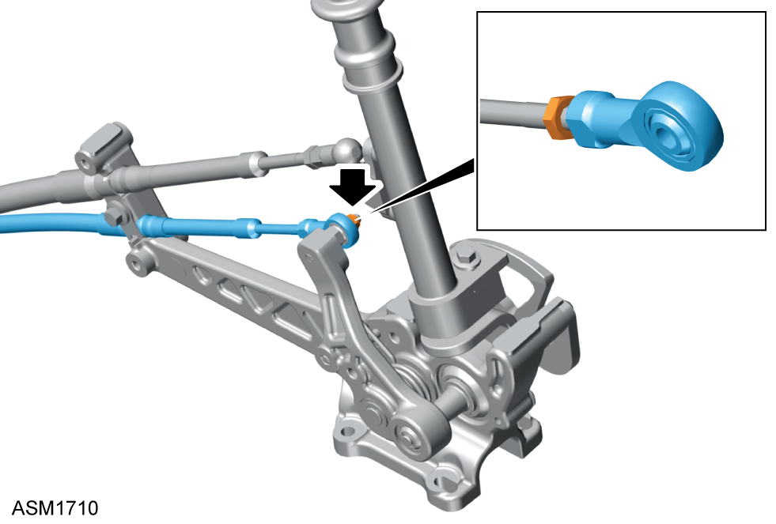
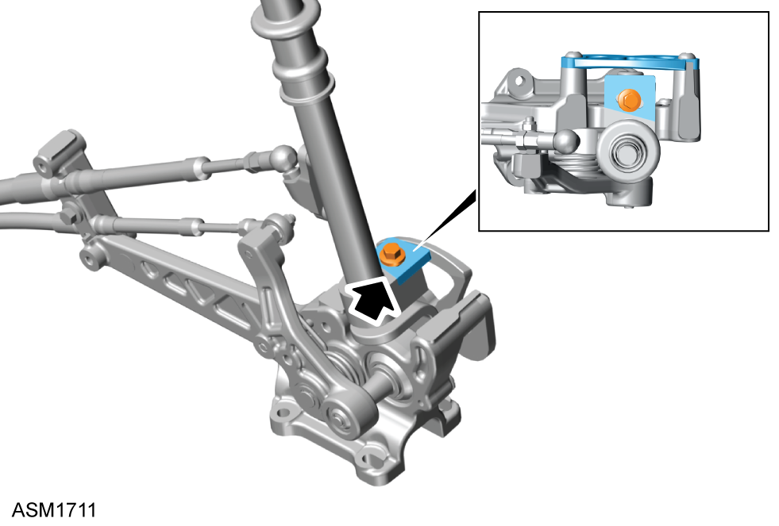

Gearchange Cable Adjustment - V6
Print
Operation Code: 47.05.25-00
Adjustment for 3rd/4th Gears
- Remove centre console assembly. Refer to procedure.

- Remove M5 nyloc nut securing crossgate cable rod end to crossgate lever.
- Disconnect crossgate cable rod end from crossgate lever.
- Loosen locknut securing rod end to
crossgate cable.
- Position gear lever in neutral between 3rd and 4th gear.
NOTE: Gear lever should move smoothly in either direction and positively return to neutral when released.
- Turn rod end clockwise or counterclockwise on crossgate cable in 360 degree increments to adjust cable length as required so that crossgate cable rod end slides onto crossgate lever retaining stud with no or minimal resistance.
- Install M5 nyloc nut securing crossgate cable to crossgate lever. Torque 5 Nm.
- Tighten rod end locknut securing crossgate cable to rod end. Torque 4 Nm.
NOTE: Use two spanners to prevent crossgate cable from twisting during tightening.
Adjustment for 1st/2nd and Reverse Gears

- Loosen M5x20 bolt securing gearshift guide to gearshift lever base.
- Position gearshift lever so that 1st and 2nd gears can be selected with minimal or no resistance, then hold gearshift lever in 1st gear while pushing it left.
- Slide gearshift guide forwards or backwards as required until it touches reverse blocker plate and also pushes gearshift lever slightly right.
- Tighten M5x20 bolt securing
gearshift guide to gearshift lever base. Torque 4 Nm.
- Position gearshift lever in neutral, then push gearshift lever left so that gearshift guide contacts reverse blocker plate.
- Check selection of 1st and 2nd gear, there should be no obstruction to forwards or backwards movement of gearshift lever.
- Check reverse gear can be selected with reverse collar lifted.